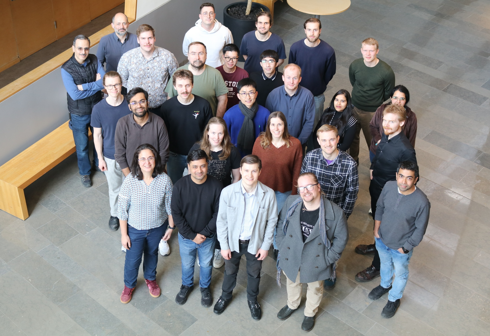
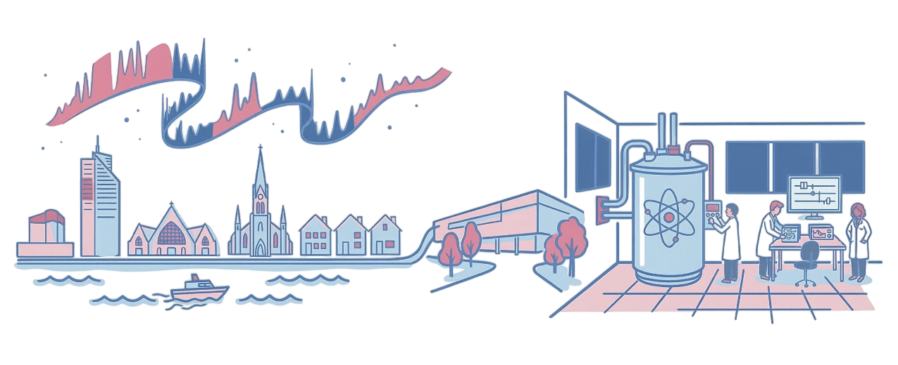

Welcome webpage of the QC2 Lab!

Our mission
We are a team of physicists and engineers specialized in superconducting circuits for quantum computing applications and enabling technologies. Our work focuses on developing fast, high-fidelity quantum gates and qubit readout, improving qubit coherence through device design and fabrication, while advancing the development of large-scale quantum processors.

We are based at the Microtechnology and Nanoscience Department (MC2) at Chalmers University of Technology, where we have access to state-of-the-art laboratories and clean room.
Latest publications
-
Feb 2026
Electrical post-fabrication tuning of aluminum Josephson junctions at room temperature
Josephson junctions are a key element of superconducting quantum technology, serving as the core building blocks of superconducting qubits. We present an experimental study on room-temperature electrical tuning of aluminum junctions, showing that voltage pulses can controllably increase their resistance and adjust the Josephson energy while maintaining qubit quality factors above 1 million. We find that the rate of resistance increase scales exponentially with pulse amplitude during manipulation, after which the spontaneous resistance increase scales proportionally to the amount of manipulation. We show that this spontaneous increase halts at cryogenic temperatures, and resumes again at room temperature. Using our stepwise protocol, we achieve up to a 270% increase in junction resistance, corresponding to a reduction of nearly 2 GHz of the qubit transition frequency. These results establish the achievable range, relaxation behavior, and practical limits of electrical tuning, enabling post-fabrication mitigation of frequency crowding in quantum processors. -
June 2025
Real-time adaptive tracking of fluctuating relaxation rates in superconducting qubits
The fidelity of operations on a solid-state quantum processor is fundamentally bounded by environmental decoherence. Characterizing environmental fluctuations is challenging because the acquisition time of nonadaptive experimental protocols limits temporal precision and can average out rapid features of the underlying dynamics. Here, we overcome this temporal-resolution limit by two orders of magnitude using a field-programmable gate-array (FPGA) powered classical controller that adaptively and continuously tracks the relaxation-time fluctuations of two fixed-frequency superconducting transmon qubits, which exhibit average relaxation times of approximately 0.17 ms and occasionally exceed 0.5 ms. We report events in which the relaxation time switches by nearly an order of magnitude over timescales of just tens of milliseconds, rather than minutes or hours as previously reported. Our real-time Bayesian estimation protocol estimates relaxation times within a few milliseconds, close to the decoherence timescale itself. Our statistical analysis further suggests that some of these fast fluctuations arise from two-level systems switching at rates up to 10 Hz, four orders of magnitude faster than earlier reports. These results redefine the timescales relevant for calibration in superconducting quantum processing units, establish a reference for rapid relaxation-rate characterization in device screening, and improve our understanding of fast relaxation dynamics.
To have an overview of all the publications of the QC2 lab since its foundations, click below.
View All PublicationsVacancies & Jobs
-
Read More
Postdoc in experimental superconducting quantum computing
Application deadline: April 30th, 2026 -
WACQT Summer Internships: Quantum Software & Calibration
10-Week Paid Internship Deadline: May 20th, 2026Join the QC2 group to work on our 25-qubit quantum processor. We are offering two distinct projects focusing on the Tergite software stack:
Project 1: Readout Optimization
Optimize readout algorithms, improve benchmarking protocols, and automate calibration routines for our 25-qubit device.
Contact Michele F. G.Project 2: ML for Transpilation
Develop neural network prototypes to automate quantum circuit optimization and transpilation into hardware-compatible operations.
Contact Matteo R.Requirements: Bachelor’s in Physics/Nano, strong Python skills, and a collaborative attitude. -
Contact Us
Interested in joining our group?
If no positions above match your profile but you are interested in our research, please reach out to us.